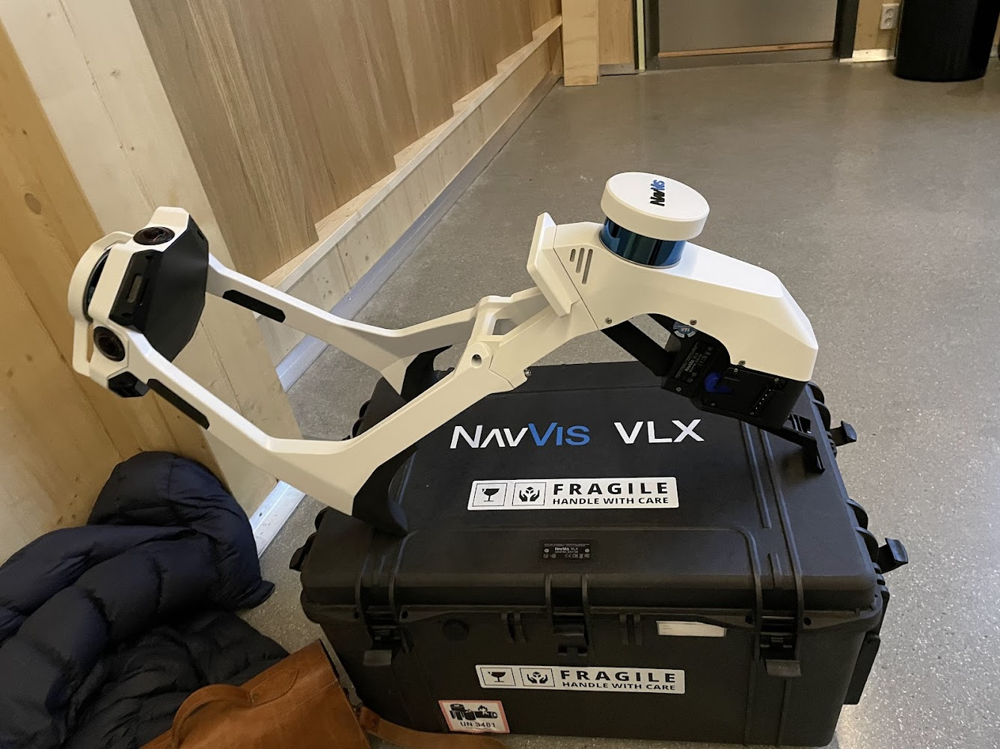
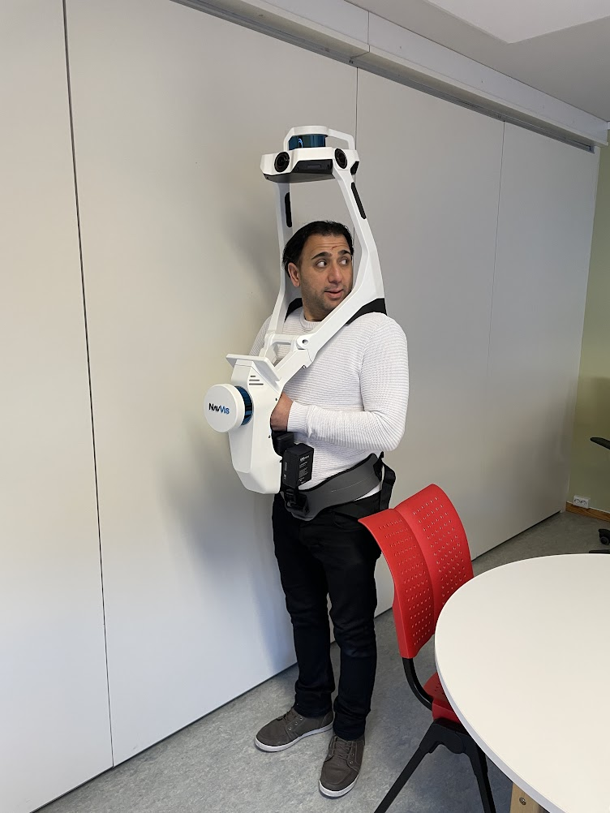

IVIONIZER
Einaste kjende løysing for å redigere NavVis VLX-3 fisheye-bilete før NavVis Ivion presenterer dei offentleg — laga for å tette eit kritisk norsk GDPR-kompliansehol som ikkje eingong programvara sine eigne utviklarar hadde løyst.
NavVis VLX-3 er ein profesjonell LiDAR 3D-skanner brukt av Envision-IT for å digitalisere bygg. Under ein skanning tek eininga fisheye-fotografi av kvart rom han passerer gjennom — automatisk, kontinuerleg, i full oppløysing.
Desse bileta vert så lasta opp til NavVis Ivion — ei skybasert plattform som presenterer dei som ein immersiv gjennomgang tilgjengeleg for kundar og offentlegheita. Problemet: VLX-en fangar alt. Folks andlet. Namnebrikker. Barn i skular. Alt hamnar ope og synleg i Ivion.
Norsk GDPR krev at identifiserbare personar som er fanga i offentlege eller halvprivate rom ikkje kan publiserast utan samtykke. Skannearbeidsflyten — slik han var utforma — hadde ingen mekanisme for å etterleve dette. Envision-IT sine prosjekt var i fare for å stoppe heilt opp.
NavVis Ivion er konstruert for å avvise bilete som ikkje samsvarar med det presise interne formatet — spesifikke EXIF-felt, enkodingsparametrar og filstruktur. Å redigere ei .JPG-fil i Photoshop og laste ho opp igjen fungerer rett og slett ikkje. Ivion avviser ho. Det fanst ingen offisiell workaround. NavVis sine eigne utviklarar hadde ingen løysing.
IVIONIZER reverserte det interne filformatet NavVis Ivion forventar. Ved å analysere den nøyaktige EXIF-metadatastrukturen, enkodingskjeda og byte-nivå-pakkinga av ekte VLX-3-utdata, kan IVIONIZER ta i mot eit redigert bilete — fritt prosessert i Photoshop, andlet sløra, sensitive felt klipt bort — og pakke det om til ei fil Ivion handsamar som ekte.
Dette hadde aldri vorte gjort tidlegare. NavVis-utviklarane hadde ingen publisert metode. Sjølv ingeniørar hjå NavVis — då problemet vart teke opp — hadde inga løysing. IVIONIZER var den første og einaste fungerande implementasjonen.
Applikasjonen har gått gjennom tre iterasjonar. v3 legg til batch-prosessering — ein operatør kan behandle heile skandøkter (hundrevis av bilete) i ein enkelt kø, i staden for å handtere kvar fil individuelt. Verktøyet køyrer på Windows og macOS.

NavVis VLX-3 — skannareininga som tek fisheye-bilete av kvart skannarom
VLX-3 iført under drift — skannar er boren gjennom rom og tek kontinuerlege fisheye-bilete